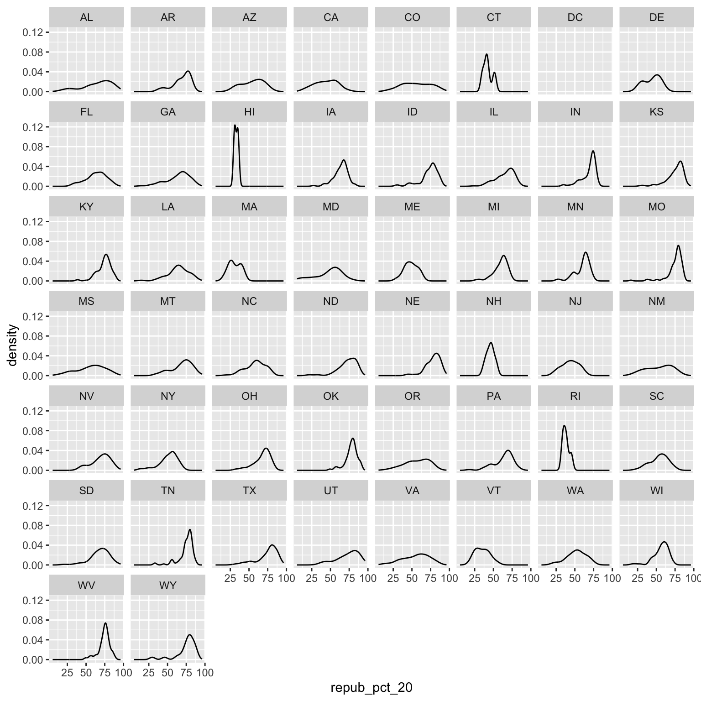
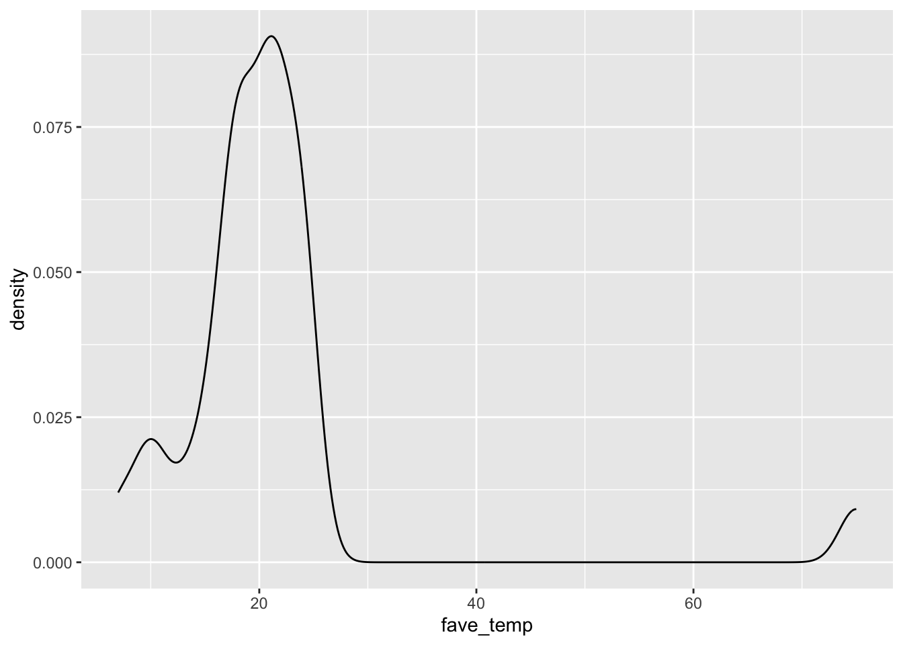
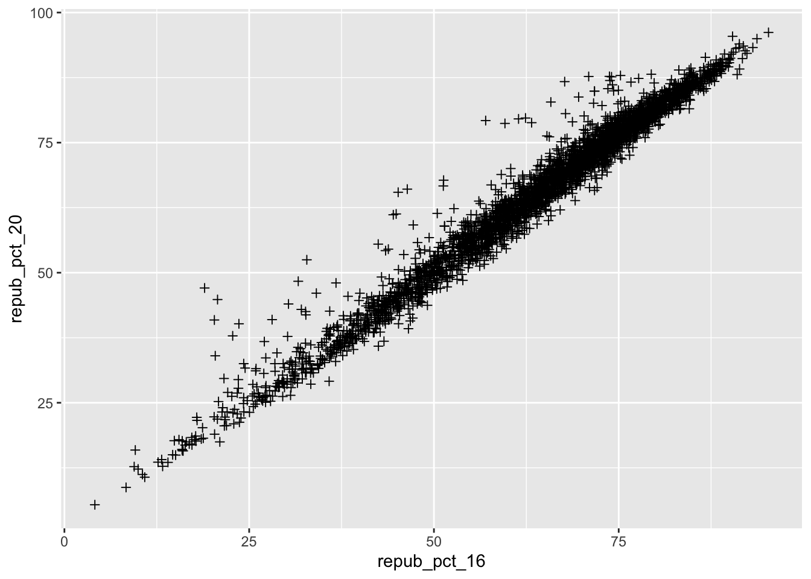
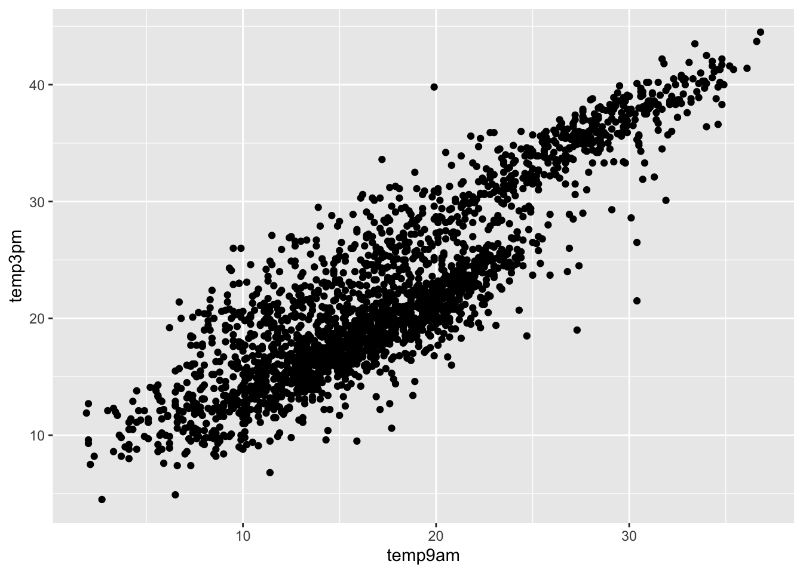

temp_3pm temp_9am
1 24 14
2 26 18
3 20 15
4 15 13
5 15 11
6 15 119 Bivariate Viz
number-sections: true execute: warning: false fig-height: 2.75 fig-width: 4.25 fig-env: ‘figure’ fig-pos: ‘h’ fig-align: center code-fold: false
Learning Goals
Warm-up (together)
- Review univariate viz ideas and code.
Exercises (in groups)
- Explore how to build and interpret visualizations of bivariate, i.e. two variable, relationships.
Additional Resources
For more information about the topics covered in this chapter, refer to the resources below:
- ggplot demo (YouTube) by Lisa Lendway
- common ggplot mistakes (YouTube) by Lisa Lendway
- Visualizing amounts (html) by Wilke
- Visualizing many distributions at once (html) by Wilke
Instructions
General
- Be kind to yourself.
- Collaborate with and be kind to others. You are expected to work together as a group.
- Ask questions. Remember that we won’t discuss these exercises as a class.
Activity Specific
Help each other with the following:
- Create a new Quarto document in the activities folder of your portfolio project and do not forgot to include it in
_quarto.ymlfile. Then click the</> Codelink at the top right corner of this page and copy the code into the created Quarto document. This is where you’ll take notes. Remember that the portfolio is yours, so take notes in whatever way is best for you. - Don’t start the Exercises section before we get there as a class. First, engage in class discussion and eventually collaborate with your group on the exercises!
- Go slow! Don’t worry about memorizing the code, but do slow down to examine it, even if you’re not asked explicitly about the code. Think about:
- How the data variables are used in the plot.
- What
geomthe plot uses. - How color and fill work for the
geomyou’re using.
- There are some coding “intuition checks” along the way. The goal here is to start connecting to and expanding upon the structure of our
ggplot()code. Don’t spend more than a few minutes trying these out. If you don’t get it, no problem! You can move on and learn the code in the next exercise. - The goal is for every student to finish the required exercises before we meet again. After that, choose your own adventure!
- If you’re feeling like the required exercises gave you plenty to chew on, simply stop the activity. Go back and review the material you learned. You never need to think about the optional exercises.
- If you’re feeling like your brain still has some space after completing the required exercises, try the optional ones. These exercises are either “bonus” visualizations or intuition checks about some material coming up.
9.1 Review
Let’s review some univariate concepts and code using our class survey data. If the answers aren’t at the top of your mind, don’t fret! We’ve barely started speaking this new language, and learned a ton of vocab last week, so you naturally won’t remember it all.
EXAMPLE 1: Hangout Preferences
Students were asked, in that moment, where they’d most like to spend time outside. How did they answer? Was there a lot of agreement or a lot of variability in answers? Build and interpret a plot that helps address these questions while reviewing:
- “code as communication”
- connecting with the components of a plot:
- set up a frame
- add a layer / geometric element
- change the theme, e.g. axis labels, color, fill
EXAMPLE 2: Temperature Preferences
Students were asked about their ideal outdoor temperature, in degrees Celsius. How did they answer? What was the typical response? What was the range in responses? Were there any outliers? Build and interpret 2 plots that help address these questions.
Bar Charts vs. Histograms
Bar charts & histograms can appear pretty similar, but they do different things.
- Bar charts count up the number of observations of each outcome of a variable. They’re good for categorical variables, or quantitative variables with only a handful of possible outcomes.
- Histograms count up the number of observations that fall into different numerical ranges of variable. They’re good for quantitative variables, especially those with many different observed outcomes.
9.2 New stuff
Thus far, we’ve been studying one variable at a time, using univariate plots. But once we get a sense of how individual variables behave on their own, our questions often turn to relationships among variables. For example, in our hikes data:
- How much
timedoes it take to complete a hike? ——> How istimerelated to a hike’selevation? What about itslength? - How does difficult
ratingvary from hike to hike? ——-> How is difficultyratingrelated to a hike’sascent?
9.2.1 Exploring relationships
Exploring univariate patterns often sparks follow-up questions about relationships between 2+ variables. Often, but not always, variables take on specific roles:
-
response variable: the variable whose variability we would like to explain (
timeto complete a hike) -
predictors: variables that might explain some of the variability in the response (a hike’s
elevationorlength)
Visualizations can help explore:
- relationship trends (direction and form)
- relationship strength (degree of variability from the trend)
- outliers in the relationship
EXAMPLE 3
For each pair of variables below, sketch on paper a visualization of their relationship. Focus on general viz process, don’t worry about the exact details. The data here are totally made up.
- 3pm temperature (response) vs 9am temperature (predictor)
- 3pm temperature (response) vs location (predictor)
temp_3pm location
1 24 A
2 26 A
3 20 A
4 15 A
5 15 A
6 0 A
7 40 B
8 60 B
9 57 B
10 44 B
11 51 B
12 75 BThink: How might we modify the below density plot of temp_3pm to distinguish between locations?

-
rain_today(the response) andlocation(the predictor)
rain_today location
1 no A
2 no A
3 no A
4 no A
5 yes A
6 no A
7 yes A
8 no B
9 yes B
10 yes B
11 no B
12 yes BThink: How might we modify the below bar plot of location to distinguish between days on which it did or didn’t rain?
9.2.2 General guidance for building bivariate plots
As with univariate plots, an appropriate visualization for the relationship between 2 variables depends upon whether the variables are quantitative or categorical. In general:
- Each quantitative variable requires a new axis (or a quantitative scale if we run out of axes).
- Each categorical variable requires a new way to “group” the graphic (eg: using colors, shapes, separate facets, etc)
- For visualizations in which overlap in glyphs or plots obscures the patterns, try faceting or transparency.
9.3 Exercises (required)
Github user Tony McGovern has compiled and made available 2020/2016/2012 presidential election results for most of 3000+ U.S. counties, except Alaska. (Image: Wikimedia Commons)
.png){kind=link}

A wrangled version of this data, is imported below, after being combined with:
- 2013 county-level demographics from the
df_county_demographicsdata set from thechoroplethrR package - historical voting trends in the state in which the county falls (from https://www.270towin.com/content/blue-and-red-states):
- red = consistently Republican
- blue = consistently Democratic
- purple = something in between
state_name state_abbr historical county_name county_fips total_votes_20
1 Alabama AL red Autauga County 1001 27770
2 Alabama AL red Baldwin County 1003 109679
3 Alabama AL red Barbour County 1005 10518
4 Alabama AL red Bibb County 1007 9595
5 Alabama AL red Blount County 1009 27588
6 Alabama AL red Bullock County 1011 4613
repub_pct_20 dem_pct_20 winner_20 total_votes_16 repub_pct_16 dem_pct_16
1 71.44 27.02 repub 24661 73.44 23.96
2 76.17 22.41 repub 94090 77.35 19.57
3 53.45 45.79 repub 10390 52.27 46.66
4 78.43 20.70 repub 8748 76.97 21.42
5 89.57 9.57 repub 25384 89.85 8.47
6 24.84 74.70 dem 4701 24.23 75.09
winner_16 total_votes_12 repub_pct_12 dem_pct_12 winner_12 total_population
1 repub 23909 72.63 26.58 repub 54907
2 repub 84988 77.39 21.57 repub 187114
3 repub 11459 48.34 51.25 dem 27321
4 repub 8391 73.07 26.22 repub 22754
5 repub 23980 86.49 12.35 repub 57623
6 dem 5318 23.51 76.31 dem 10746
percent_white percent_black percent_asian percent_hispanic per_capita_income
1 76 18 1 2 24571
2 83 9 1 4 26766
3 46 46 0 5 16829
4 75 22 0 2 17427
5 88 1 0 8 20730
6 22 71 0 6 18628
median_rent median_age
1 668 37.5
2 693 41.5
3 382 38.3
4 351 39.4
5 403 39.6
6 276 39.6We’ll use this data to explore voting outcomes within the U.S.’s 2-party system. Here’s a list of candidates by year:
| year | Republican candidate | Democratic candidate |
|---|---|---|
| 2020 | Donald Trump | Joe Biden |
| 2016 | Donald Trump | Hillary Clinton |
| 2012 | Mitt Romney | Barack Obama |
Exercise 0: Review
Part a
How many, or roughly what percent, of the 3000+ counties did the Republican candidate win in 2020?
- Take a guess.
- Then make a plot of the
winnervariable. - Then discuss what follow-up questions you might have (and that our data might help us answer).
Part b
The repub_pct_20 variable provides more detail about the Republican support in each county. Construct a plot of repub_pct_20.
Notice that the distribution of Republican support from county to county is slightly left skewed or negatively skewed.
What follow-up questions do you have?
Exercise 1: Quantitative vs Quantitative Intuition Check
Be Quick
Don’t spend more than 3 minutes on this!
Below is a scatterplot of the Republican support in 2020 vs 2016. Notice that:
- both variables are quantitative, and get their own axes
- the response variable is on the y-axis, demonstrating how
repub_pct_20might be predicted byrepub_pct_16, not vice versa
Try to replicate this using ggplot(). THINK:
- What info do you need to set up the canvas?
- What geometric layer (
geom_???) might add these dots / points for each county? We haven’t learned this yet, just take some guesses.

Exercise 2: 2 Quantitiative Variables
Run each chunk below to build up a a scatterplot of repub_pct_20 vs repub_pct_16 with different glyphs representing each county. Address or think about any prompts in the comments (#).

Exercise 3: Reflect
Summarize the relationship between the Republican support in 2020 and 2016. Be sure to comment on:
- the strength of the relationship (weak/moderate/strong) strong
- the direction of the relationship (positive/negative) positive relationship
- outliers (in what state do counties deviate from the national trend? Any ideas why this might be the case?) There is no any super obvious outliers, but Texas can count. Is probably because Texas is always a republic supporting stats.
Exercise 4: Visualizing trend
The trend of the relationship between repub_pct_20 and repub_pct_16 is clearly positive and (mostly) linear. We can highlight this trend by adding a model “smooth” to the plot:
Part a
Construct a new plot that contains the model smooth but does not include the individual point glyphs.

Part b
By default, geom_smooth() adds a smooth, localized model line. To examine the “best” linear model, we can specify method = "lm". It’s pretty similar in this example!
Exercise 5: Your Turn
To examine how the 2020 results are related to some county demographics, construct scatterplots of repub_pct_20 vs median_rent, and repub_pct_20 vs median_age. Summarize the relationship between these two variables and comment on which is the better predictor of repub_pct_20, median_rent or median_age.
Exercise 6: A Sad Scatterplot
Next, let’s explore the relationship between a county’s 2020 Republican support repub_pct_20 and the historical political trends in its state. In this case repub_pct_20 is quantitative, but historical is categorical. Explain why a scatterplot might not be an effective visualization for exploring this relationship. (What questions does / doesn’t it help answer?)
Because we can’t build plot in category.

Exercise 7: Quantitative vs Categorical – Violins & Boxes
Though the above scatterplot did group the counties by historical category, it’s nearly impossible to pick out meaningful patterns in 2020 Republican support in each category. Let’s try adding 2 different geom layers to the frame:
Box plots are constructed from five numbers - the minimum, 25th percentile, median, 75th percentile, and maximum value of a quantitative variable:

REFLECT:
Summarize what you’ve learned about the 2020 Republican county-level support within and between red/purple/blue states.
Exercise 8: Quantitative vs Categorical – Intuition Check
Be Quick
Don’t spend more than 3 minutes on this!
We can also visualize the relationship between repub_pct_20 and historical using our familiar density plots. In the plot below, notice that we simply created a separate density plot for each historical category. (The plot itself is “bad” but we’ll fix it below.) Try to adjust the code chunk below, which starts with a density plot of repub_pct_20 alone, to re-create this image.

Exercise 9: Quantitative vs Categorical – Density Plots
Work through the chunks below and address the comments therein.
Exercise 10
We’ve now learned 3 (of many) ways to visualize the relationship between a quantitative and categorical variable: side-by-side violins, boxplots, and density plots.
- Which do you like best?
- What is one pro of density plots relative to boxplots?
- What is one con of density plots relative to boxplots?
Exercise 11: Categorical vs Categorical – Intuition Check
Finally, let’s simply explore who won each county in 2020 (winner_20) and how this breaks down by historical voting trends in the state. That is, let’s explore the relationship between 2 categorical variables! Following the same themes as above, we can utilize grouping features such as fill/color or facets to distinguish between different categories of winner_20 and historical.
Be Quick
Spend at most 5 minutes on the following intuition check. Adjust the code below to recreate the following two plots.


Exercise 12: Categorical vs Categorical
Construct the following 4 bar plot visualizations.
Part a
Name one pro and one con of using the “proportional bar plot” instead of one of the other three options.
Part b
What’s your favorite bar plot from part and why?
Exercise 13: Practice (now or later)
Decide
Decide what’s best for you:
- Try this extra practice now.
- Reflect on the above exercises and come back to this extra practice later (but before the next class).
Import some daily weather data from a few locations in Australia:
Construct plots that address the research questions in each chunk. You might make multiple plots–there are many ways to do things!. However, don’t just throw spaghetti at the wall.
Reflect before doing anything. What types of variables are these? How might you plot just 1 of the variables, and then tweak the plot to incorporate the other?
9.4 Exercises (optional)
The above visualizations are foundational and important. But they’re not the only way to visualize the variables in our dataset.
Optional Exercise 1: Many Categories
Suppose we wanted to better understand how the 2020 Republican support varied from county to county within each state. Since repub_pct_20 is quantitative and state_abbr is categorical, we could make a density plot of repub_pct_20 for each state. Reflect on why this is bad.

A facet wrap would also be bad!

When we want to compare the distribution of some quantitative outcome among many groups / categories, a ridgeline plot can be a good option. These are also called joy plots, named after the album cover for “Unknown Pleasures” by Joy Division. (Look it up!) To make a ridgeline plot, we can use the geom_density_ridges() function from the ggridges package.
Follow-up questions
- Which states tend to have the most variability in outcomes from county to county? The least?
- What other interesting patterns do you notice?
- Does this plot prompt any other questions?
Optional Exercise 2: Total Outcomes by State
Let’s import some new data and counts up the total votes (Republican and Democratic) by state, not county. This was wrangled from the elections data!
For example, we might make a scatterplot of the 2020 vs 2016 outcomes:
BUT this isn’t the easiest way to communicate or identify the changes from 1 year to the next.


Reflect on the following
- What do you think this plot needs? Try it! You might need to do some digging online.
- Summarize the main takeaways from the plots. Which states changed the most from 2016 to 2020? The least? Where did the Republican support increase? Where did it decrease?
- What other questions are you left with?
9.5 Solutions
Click for Solutions
[1] 28'data.frame': 28 obs. of 4 variables:
$ cafe_mac : chr "Cheesecake" "Cheese pizza" "udon noodles" "egg rolls" ...
$ minutes_to_campus: int 15 10 4 7 5 35 5 15 7 20 ...
$ fave_temp : num 18 24 18 10 18 7 75 24 13 16 ...
$ hangout : chr "the mountains" "a beach" "the mountains" "a beach" ...EXAMPLE 1: Hangout preferences

EXAMPLE 2: Temperature preferences

9.5.1 Exercise 0:


Exercise 1: quantitative vs quantitative intuition check
See next exercise.
Exercise 2: 2 quantitiative variables





Exercise 3: Reflect
There’s a strong, positive association – the higher the Republican support in 2016, the higher it was in 2020. There are some counties in Texas and Utah where the R support in 2020 was disproportionately higher than in 2016.
Exercise 4: Visualizing trend

Part a

Part b

Exercise 5: Your turn
There’s a moderate, positive association between R support and median age – the older the average age in a county, the higher the R support tends to be. However, there’s a stronger, negative association between R support and median rent – the higher the rent (a proxy for cost of living), the lower the R support tends to be.


Exercise 6: A sad scatterplot
See next exercise.
Exercise 7: quantitative vs categorical – violins & boxes


REFLECT:
There’s quite a bit of range in county-level R support within blue, purple, and red states. However, R support tends to be higher in red states and lower in blue states.
Exercise 8: quantitative vs categorical – intuition check
See next exercise.
Exercise 9: quantitative vs categorical – density plots


Exercise 10
One pro of density plots relative to boxplots: doesn’t oversimplify the data / boil the data down to just 5 numbers.
Name one con of density plots relative to boxplots: boxplots can be easier to interpret
Exercise 11: categorical vs categorical intuition check
see exercise below
Exercise 12: categorical vs categorical


Part a
pro = easier to compare the relative outcomes in blue vs purple vs red states con = lose track of how many counties fall into blue vs purple vs red states
Exercise 13: Practice (now or later)




Optional exercise 1: Dealing with lots of categories

Optional exercise 2: total outcomes by state